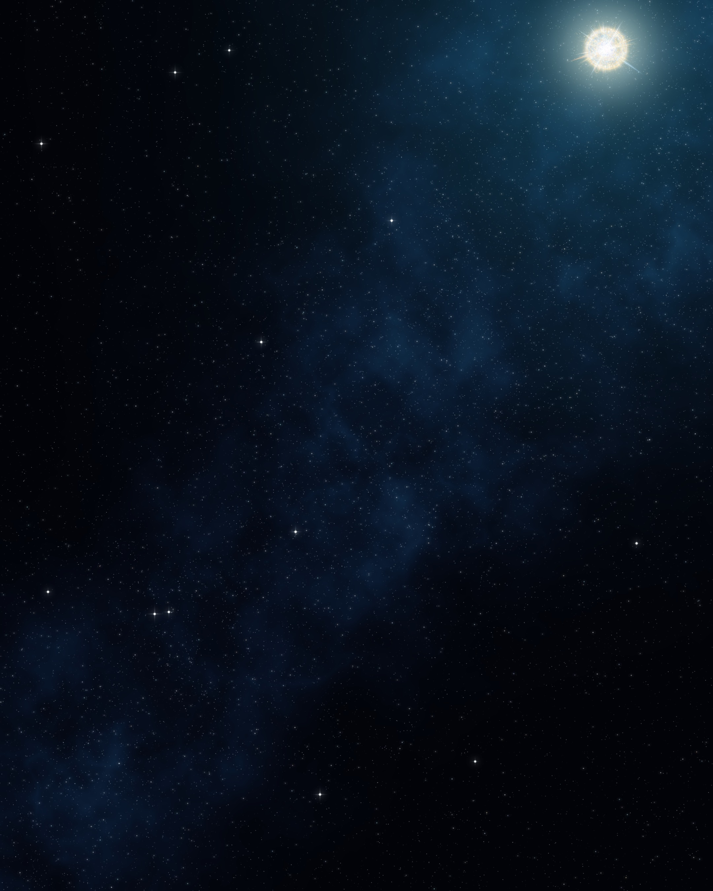

JOIN THE
CYMETICA QUEST
Be the first to take a seat
and earn
5%
of all Cymetica fees.
REVENUE SHARE
TOP 3
A cut of
every fee
on Cymetica. All 3 seats are open.
1
?
Open seat
could be yours
5%
of every fee
2
?
Open seat
could be yours
3%
of every fee
3
?
Open seat
could be yours
1%
of every fee
HOW TO TAKE A SEAT
01
Start a company
in the Universe
→
02
Ship products
Build it Better
→
03
Get seen
land · Promo Market
→
04
Bring the most fees
top 3 get paid
STAKE YOUR CLAIM →
cymetica.com/company